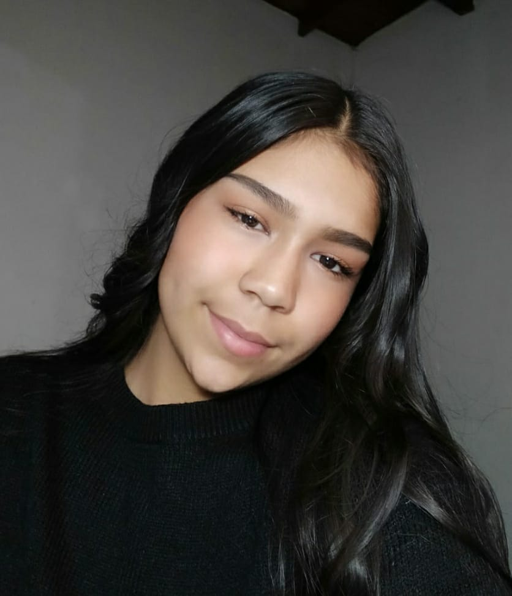

Soy Maria Camila Rodríguez Martínez, nací el 19 de septiembre del año 2005 en Medellín, Antioquia. Actualmente tengo 16 años, vivo en Envigado con mi familia, estoy en 10mo grado de bachillerato en la institución educativa Alejandro Vélez Barrientos.
Información básica
Actitudes y Aptitudes
Soy una persona creativa y positiva, tomo una actitud de liderazgo en el trabajo en equipo, siendo a la vez proactiva y activa en las diferentes tareas y actividades del día a día. Soy alguien que se adapta a las diferentes situaciones que se puedan presentar, siendo muy leal y esforzándome por hacer todo lo mejor y más organizado posible.
Habilidades y Conocimientos
- Soy una artísta en formación apasionada por la pintura, la música y el diseño gráfico
-
Cuento con un nivel A2 de inglés y continuo estudiando para perfeccionarlo.
-
Soy técnico en sistemas en formación con conocimientos de excel avanzado, bases de datos y programación.
-
Soy Programador front-end novato en formación con bases en HTML, CSS y JS.
Portafolio de Proyectos
-
En el año 2017 participé del Proyecto Aulas de Vida patrocinado por el área metropolitana
-
En el año 2019 hice parte del programa Ser Más Natural liderado por el área metropolitana
-
Actualmente participo de un grupo de Investigación registrado en Ondas de minciencias llamado Memoria Juvenil.
-
Actualmente también hago parte del programa Jóvenes CreaTIvos de la fundación ROFÉ.
Aspiraciones
Corto plazo
A corto plazo aspiro a graduarme del programa Jóvenes Creativos, aspiro a graduarme de bachilleratocon excelentes resultados y obtener el título de técnico en sistemas de la media técnica.
Mediano plazo
A mediano plazo aspiro a entrar a una buena universidad, ya sea en Colombia o en otro país, también aspiro a viajar a Australia a estudiar inglés.
Largo plazo
A largo plazo aspiro a tener mi empresa de desarrollo web otrabajar en una buena empresa, aspiro a tener varios tipos de ingresos y tener varias propiedades, también a viajar por varias partes del mundo.
Hobbies
-
Me apasiona aprender cosas nuevas e investigar
-
Amo hacer deporte y en especial el patinaje de velocidad.
-
Me encanta la música y disfruto de ella en todas sus expresiones.
-
Me apasiona el arte, en especial el dibujo y la pintura.
-
Disfruto de compartir con mis mascotas y enseñarles nuevos trucos.